부천대학교 캡스톤디자인 프로젝트
1주차 온보딩 및
As-Is 분석 활동 보고서
Debut 프로젝트 현황 파악 및 핵심 사용자 플로우 점검
- 프로젝트명
- Debut — 개발자 취업 준비 및 협업 플랫폼
- 소속
- 부천대학교 캡스톤디자인
- 팀장
- 김정환
- 팀원
- 서준혁 · 이연지
- 작성일
- 2026년 9월 1일
- Ⅰ프로젝트 개요 및 주요 기능3
- Ⅱ7주 프로젝트 로드맵4
- Ⅲ1주차 수행 단계 및 현재 위치5
- Ⅳ핵심 사용자 플로우 활동 기록6
- Ⅴ금주 활동 정리 및 로드맵 연계30
- Ⅵ인사이트·팀 모집 화면 개선 활동31
팀 구성
| 구분 | 이름 |
|---|---|
| 팀장 | 김정환 |
| 팀원 | 서준혁 |
| 팀원 | 이연지 |
프로젝트 구조와 구현 기능을 파악하고, 대외활동에서 모의면접까지 이어지는 핵심 사용자 흐름을 화면 단위로 확인한다.
1. 프로젝트 개요
Debut은 개발자의 정보 탐색, 팀 협업, 커리어 기록, 채용 준비와 AI 면접을 하나의 흐름으로 연결하는 커리어 성장 플랫폼이다. 사용자가 활동을 탐색하고 실제 프로젝트 경험을 쌓은 뒤, 이를 취업 자료와 면접 준비에 다시 활용할 수 있도록 지원한다.
1.1 프로젝트 기능 구성
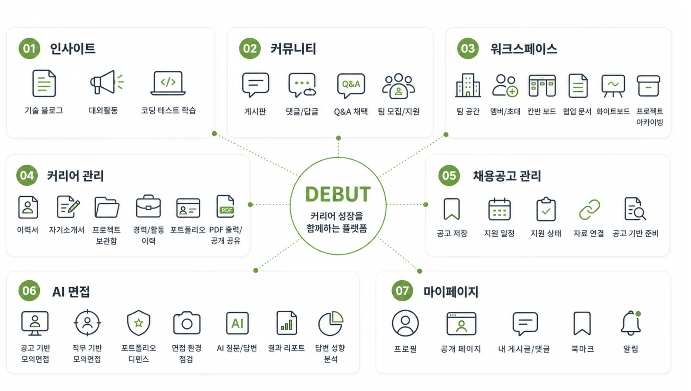
1. 주차별 활동 계획
| 주차 | 수행 단계 | 주요 작업 내용 |
|---|---|---|
| 1주차 | 온보딩 및 As-Is 분석 현재 | 현재 기능과 서비스 연결 구조를 파악하고 핵심 사용자 플로우를 점검한다. |
| 2주차 | 스프린트 플래닝 | 개선 작업의 우선순위, 담당 범위 및 세부 일정을 수립한다. |
| 3주차 | 기능 고도화 | 면접 영상 저장·조회 등 주요 기능의 완성도를 높인다. |
| 4주차 | 리포트 개선 | 면접 결과 분석 데이터와 사용자 리포트 반영 흐름을 개선한다. |
| 5주차 | UI/UX 개선 | 화면 구성과 사용자 이동 흐름을 보완하여 사용 편의성을 높인다. |
| 6주차 | 통합 테스트 및 버그 픽스 | 전체 사용자 흐름을 다시 검증하고 확인된 오류를 수정한다. |
| 7주차 | 릴리즈 및 문서화 | 최종 배포 상태를 확인하고 시연·발표용 자료를 정리한다. |
2. 현재 수행 위치
현재 기능과 서비스 구조를 파악하고, 핵심 사용자 플로우를 화면 단위로 점검하는 단계이다.
1. 현재 문서의 수행 위치
서비스 구조와 핵심 기능을 파악한 후, 실제 사용자의 이동 순서에 따라 화면을 확인하고 캡처 증적을 남기는 단계이다.
1.1 1주차 세부 진행 단계
Next.js, FastAPI, Supabase, 워크스페이스 서버의 연결 구조 확인
완료대외활동, 협업, 경험 등록, 커리어 문서, 모의면접 기능 범위 확인
완료사용자 이동 순서에 따라 핵심 화면을 브라우저에서 확인하고 캡처
완료확보한 화면 자료를 바탕으로 기능 분석 및 백로그를 별도 정리
다음 단계2. 오늘의 점검 순서
| ① 기술 블로그 탐색 | 테크 기업 확인 → 기업 선택 → 기술 콘텐츠 검색 및 조회 |
| ② 대외활동 파악 | 프로필 맞춤 추천 → 활동 상세 확인 → 팀 모집 연결 |
| ③ 워크스페이스 | 프로젝트 공간 진입 → 협업 기능 확인 → 활동 완료 상태 확인 |
| ④ 경험 등록 | 완료된 워크스페이스 기록을 커리어 경험으로 불러오기 |
| ⑤ 커리어 문서 | 등록 경험을 활용해 자소서·이력서·포트폴리오 생성 |
| ⑥ 모의면접 | 면접 유형 선택 → 자료 연결 → 면접 진행 화면 확인 |
※ 본 보고서는 사용자 이동 경로와 화면 증적을 중심으로 작성하며, 기능 결과 분석과 개선사항 도출 내용은 별도 정리한다.
5대외활동 목록 화면
사용자는 대외활동 메뉴에서 행사 유형, 검색어와 정렬 기준을 활용해 참여할 활동을 탐색한다.
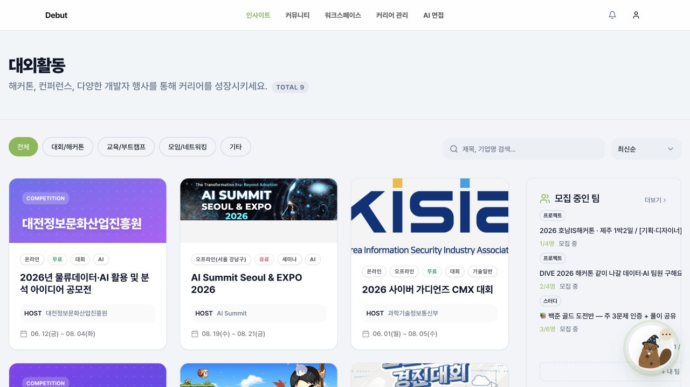
- 대외활동 전체 목록과 모집 기간을 확인한다.
- 활동 카드를 선택하여 상세 화면으로 이동한다.
- 우측 영역에서 모집 팀과 마감 임박 활동을 함께 확인한다.
대외활동 상세 화면
선택한 활동의 일정, 참가 대상, 주요 혜택과 상세 내용을 확인하고 팀원 모집 단계로 이동한다.
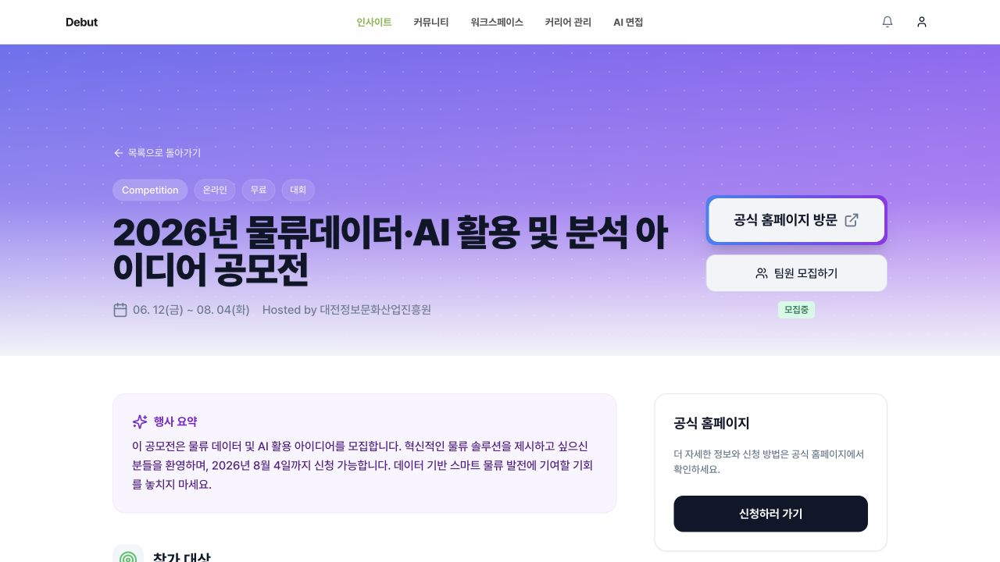
- 활동명, 주최 기관, 일정과 참가 조건을 확인한다.
- 행사 요약 및 상세 안내를 통해 활동 내용을 파악한다.
- 팀원 모집하기 기능을 통해 커뮤니티 팀 모집 흐름으로 연결한다.
팀 모집 목록 화면
사용자는 활동에 참여할 팀을 확인하거나 새로운 팀을 생성하며, 모집 완료 후 협업 워크스페이스로 이어진다.
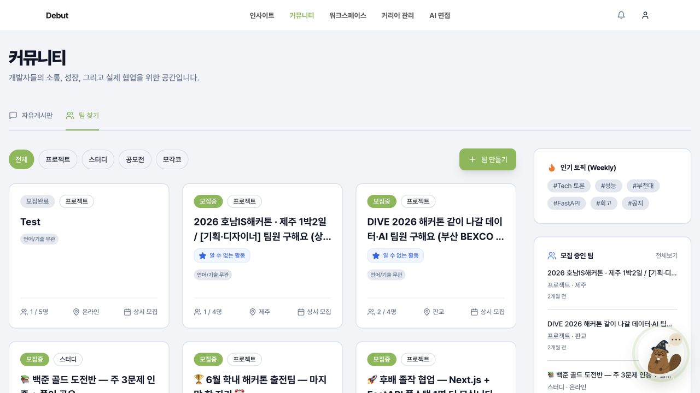
- 프로젝트·스터디·공모전 유형별 팀 모집 글을 확인한다.
- 모집 인원, 기술 스택, 진행 장소와 모집 상태를 확인한다.
- 팀 모집 완료 후 생성되는 워크스페이스로 사용자 흐름을 연결한다.
워크스페이스 목록 화면
팀 모집 또는 기존 프로젝트를 기준으로 진행 중인 협업 공간과 완료된 활동을 확인한다.
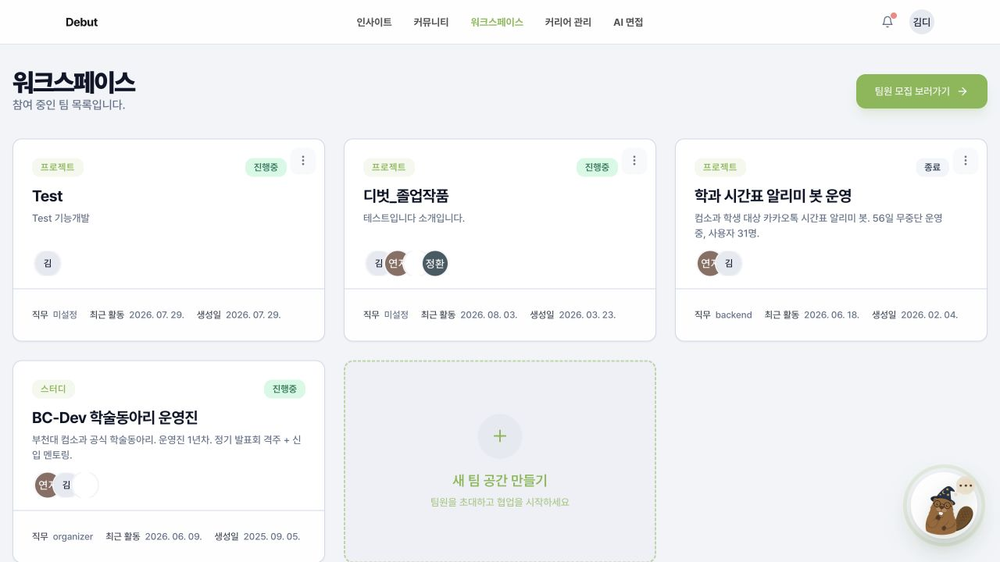
- 프로젝트별 진행 상태와 최근 활동을 확인한다.
- 점검할 워크스페이스를 선택해 프로젝트 공간으로 진입한다.
워크스페이스 개요 화면
선택한 프로젝트의 기본 정보, 구성원 및 협업 현황을 한 화면에서 확인한다.
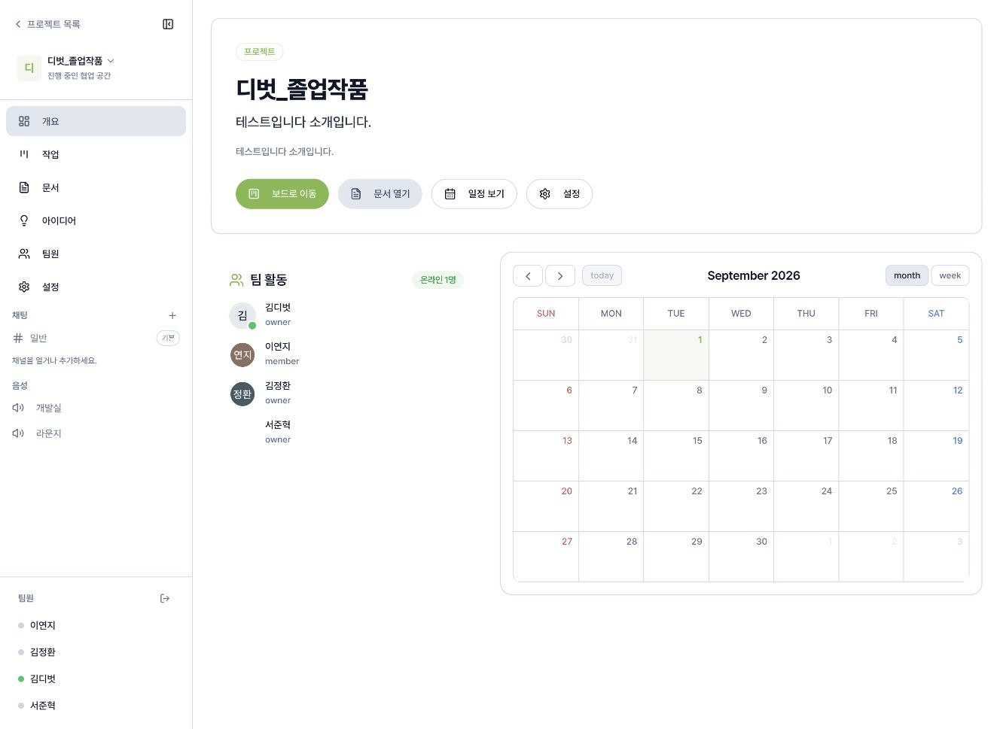
- 프로젝트 목적과 참여 멤버를 확인한다.
- 보드·문서 등 협업 메뉴로 이동할 수 있다.
워크스페이스 작업 보드
업무를 목록·칸반·타임라인 방식으로 확인하고 담당자와 진행 상태를 관리한다.
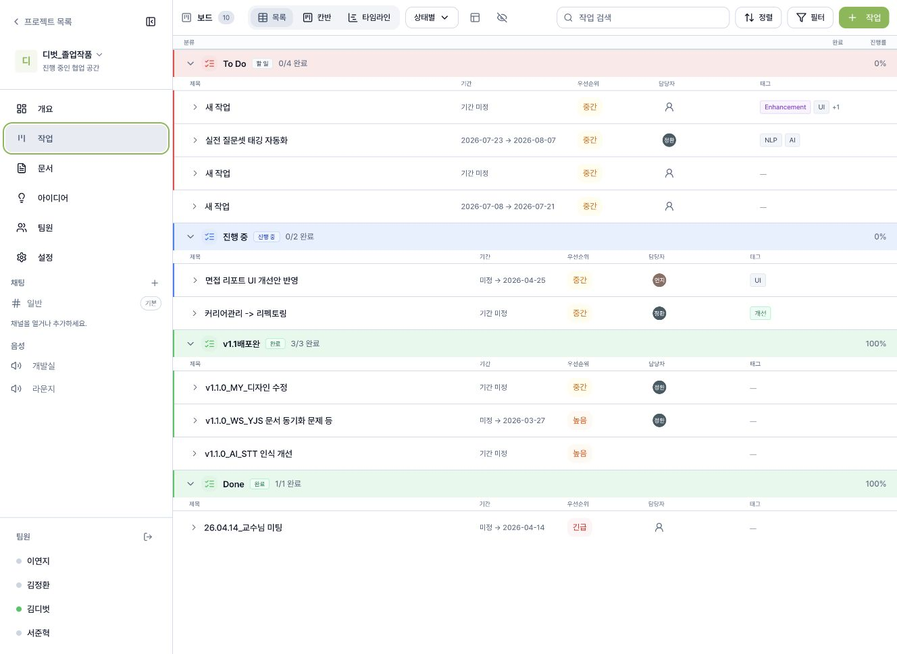
- 업무 단위의 상태와 담당 정보를 확인한다.
- 표시 방식을 전환해 프로젝트 진행 상황을 파악한다.
워크스페이스 문서 화면
프로젝트 진행 과정에서 필요한 회의록과 기획 문서를 워크스페이스 내부에서 관리한다.
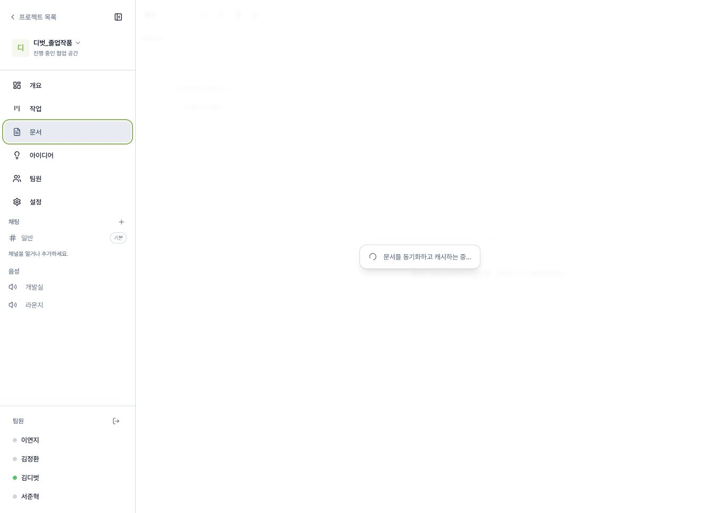
- 팀 문서를 한 공간에서 조회한다.
- 새 문서를 생성해 활동 내용을 기록한다.
완료된 워크스페이스 화면
활동이 완료되면 워크스페이스가 읽기 전용 상태로 전환되며, 프로젝트 경험 등록 단계로 연결된다.
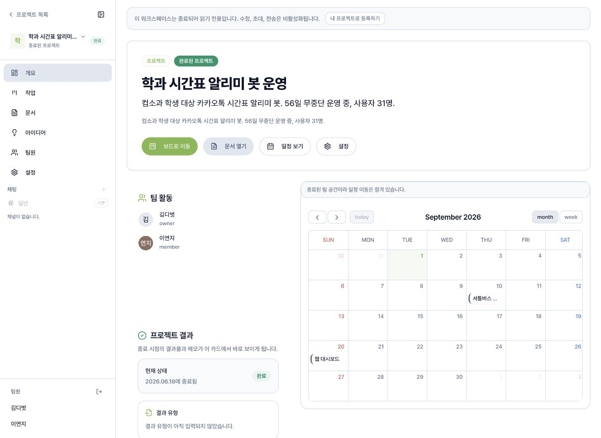
- 완료된 활동의 기록을 조회한다.
- ‘내 프로젝트로 등록하기’를 통해 커리어 경험 작성으로 이동한다.
프로젝트 경험 등록 화면
완료된 활동을 커리어 프로젝트로 전환하고, 기간·역할·기술·성과를 경험 정보로 정리한다.
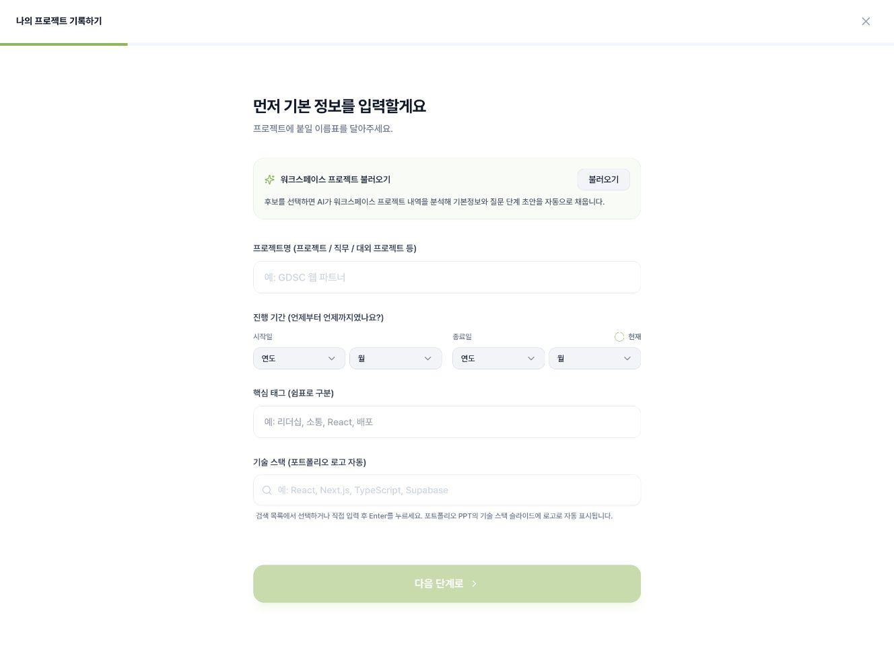
- 워크스페이스 기록을 불러오거나 직접 입력한다.
- 작성한 프로젝트 경험은 이후 커리어 문서 제작에 활용한다.
등록 프로젝트 보관함
등록이 완료된 프로젝트 경험을 확인하고 자소서 또는 포트폴리오 작성에 사용할 항목을 선택한다.
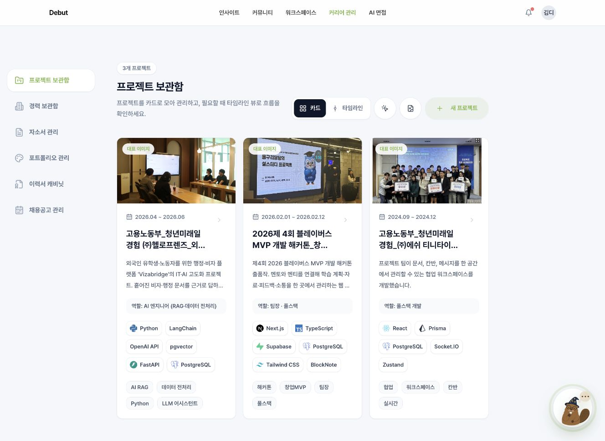
- 저장된 프로젝트의 상태와 핵심 정보를 확인한다.
- 문서 작성 목적에 따라 프로젝트를 선택한다.
자기소개서 작성 모드
프로젝트 보관함에서 자기소개서 작성 모드로 전환하여 활용할 경험을 선택한다.
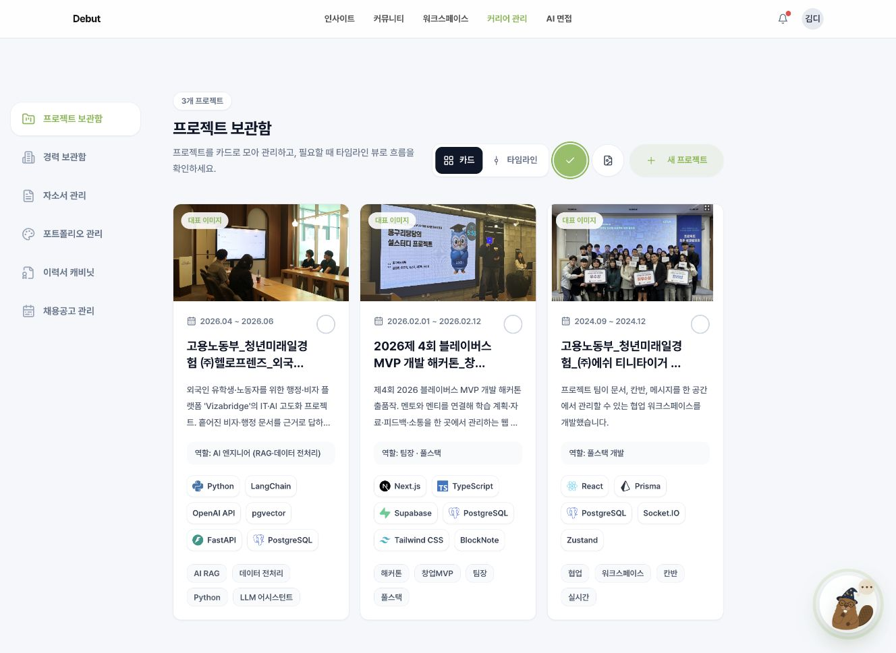
- 자기소개서에 반영할 프로젝트를 선택한다.
- 선택한 경험을 기반으로 작성 단계로 이어간다.
자기소개서 결과 관리 화면
작성한 자기소개서를 목록으로 관리하고 필요한 항목을 다시 열어 확인한다.
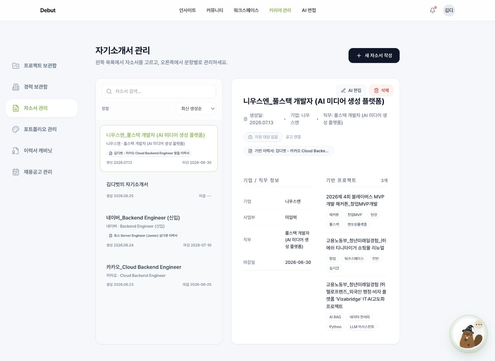
- 작성 결과의 저장 상태를 확인한다.
- 지원 목적에 맞는 자기소개서를 선택해 활용한다.
이력서 보관함
기존 이력서를 확인하고 새 이력서를 생성할 수 있는 관리 화면이다.
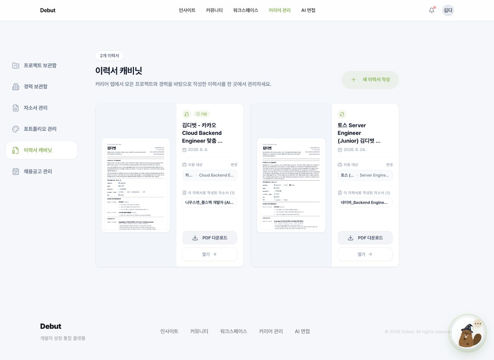
- 작성한 이력서의 목록과 상태를 확인한다.
- ‘새 이력서 작성’을 선택해 설정 단계로 이동한다.
새 이력서 작성 설정
지원 직무와 연결할 채용공고를 선택하고 이력서 작성의 기본 정보를 설정한다.
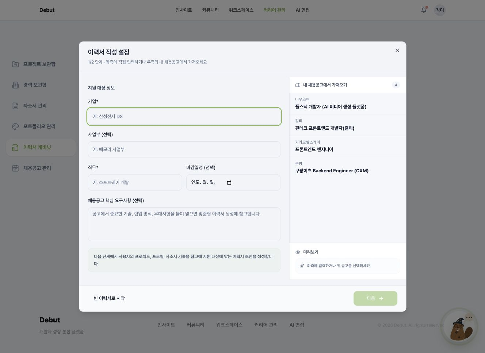
- 지원 목표와 직무 정보를 입력한다.
- 저장한 공고를 불러와 문서 작성 기준으로 활용한다.
포트폴리오 보관함
생성된 포트폴리오를 관리하고 새로운 포트폴리오 제작 흐름을 시작한다.
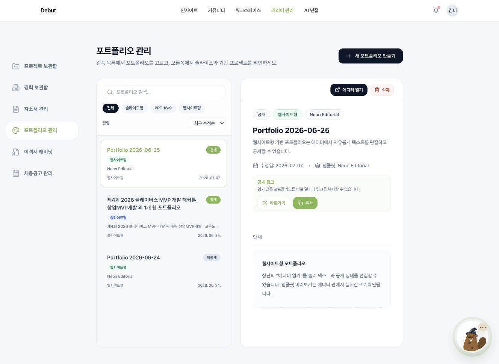
- 기존 포트폴리오의 유형과 저장 상태를 확인한다.
- 새 포트폴리오 만들기를 선택해 프로젝트 선택 단계로 이동한다.
포트폴리오 작성 모드
프로젝트 보관함을 포트폴리오 작성 모드로 전환하여 활용 가능한 경험을 확인한다.
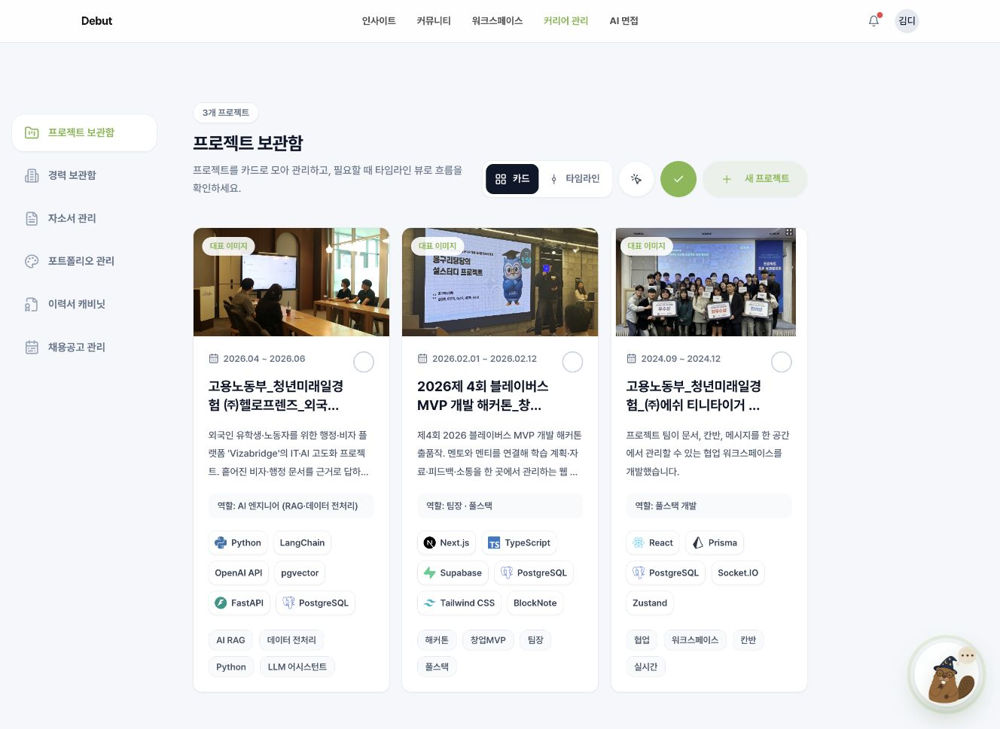
- 포트폴리오에 포함할 수 있는 프로젝트를 확인한다.
- 한 개 이상의 프로젝트를 선택해 다음 단계로 이동한다.
포트폴리오 프로젝트 선택
대표 프로젝트를 선택하고 선택된 항목을 기준으로 포트폴리오 생성 단계에 진입한다.
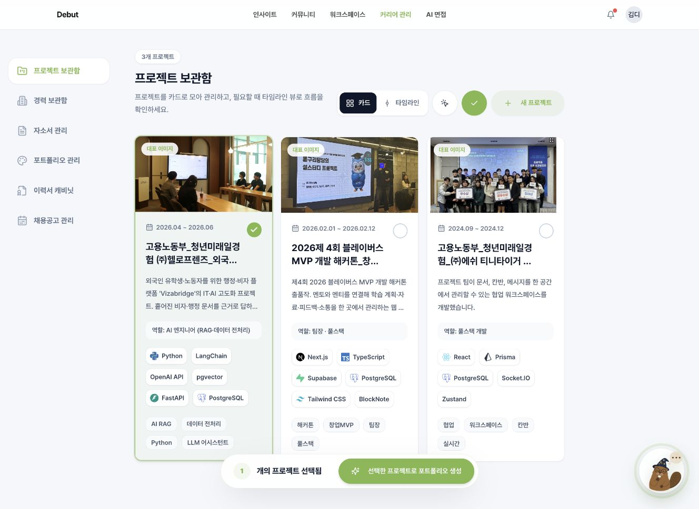
- 프로젝트 카드에서 반영할 경험을 선택한다.
- 선택한 프로젝트로 포트폴리오 생성을 진행한다.
포트폴리오 형식 선택
사용 목적에 따라 슬라이드형 또는 웹형 포트폴리오를 선택한다.
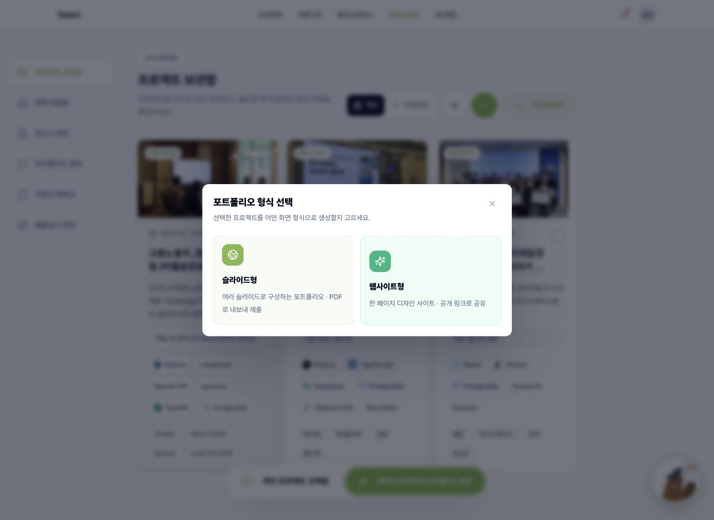
- 발표·제출 목적에 맞는 출력 형식을 비교한다.
- 선택한 형식으로 생성 작업을 이어간다.
등록 경험의 문서 활용 흐름
완료된 워크스페이스에서 등록한 프로젝트 경험은 자기소개서, 이력서, 포트폴리오 제작의 공통 자료로 연결된다.
- 활동 완료
- 경험 등록
- 문서 선택
- 결과 관리
| 문서 구분 | 확인한 사용자 흐름 |
|---|---|
| 자기소개서 | 프로젝트 보관함 → 자기소개서 작성 모드 → 작성 결과 관리 |
| 이력서 | 이력서 보관함 → 지원 직무·채용공고 설정 → 신규 이력서 작성 |
| 포트폴리오 | 포트폴리오 보관함 → 프로젝트 선택 → 슬라이드형·웹형 선택 |
생성·관리한 커리어 자료를 모의면접 설정 단계에서 불러와 면접 준비 자료로 활용한다.
AI 면접 메인 화면
채용공고 기반, 직무 기반, 포트폴리오 디펜스 중 목적에 맞는 면접 유형을 선택한다.
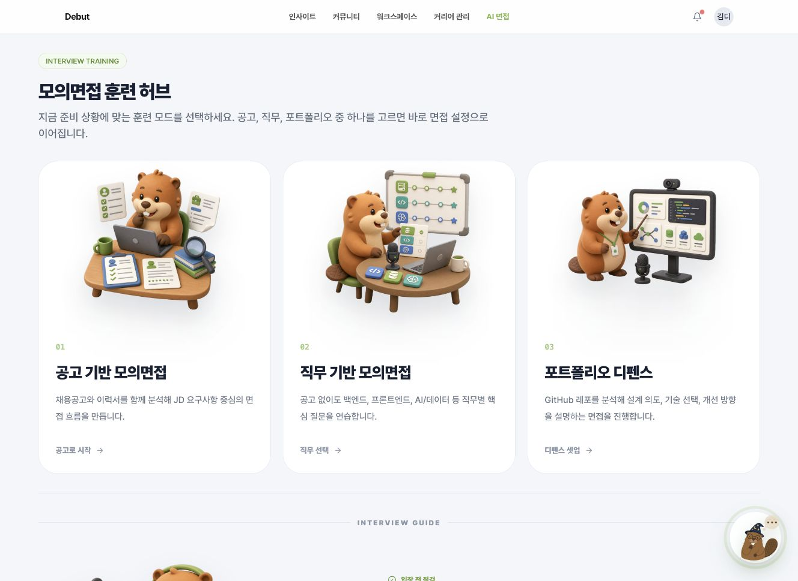
- 면접 준비 목적에 맞는 유형을 선택한다.
- 기존 면접 결과가 있는 경우 인터뷰 분석 화면으로 이동한다.
채용공고 기반 면접 설정
공고 정보, 지원 자료 및 면접 조건을 단계별로 설정하여 모의면접을 준비한다.
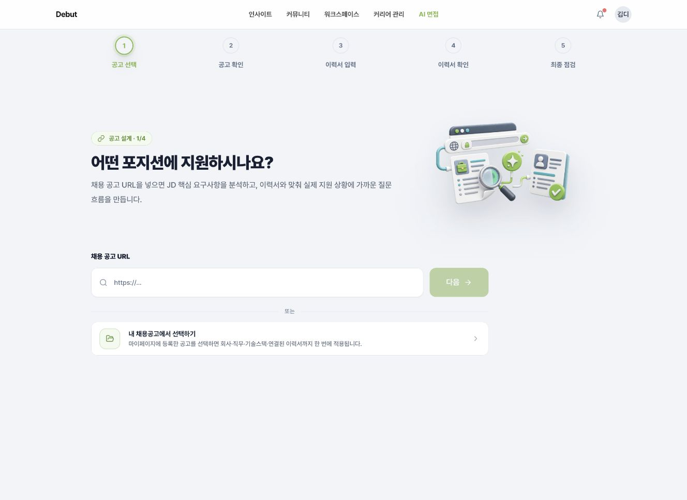
- 지원할 채용공고와 직무를 기준으로 면접 맥락을 설정한다.
- 이력서 등 필요한 커리어 자료를 연결한다.
지원 채용공고 선택
채용공고 보관함에서 면접에 사용할 회사와 직무 정보를 선택한다.
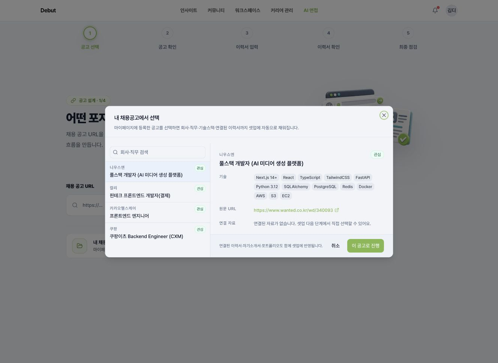
- 저장된 채용공고의 회사와 포지션을 확인한다.
- 선택한 공고 정보를 면접 설정에 반영한다.
모의면접 최종 검토
연결된 채용공고와 이력서, 면접 설정 내용을 확인한 뒤 면접 시작을 준비한다.
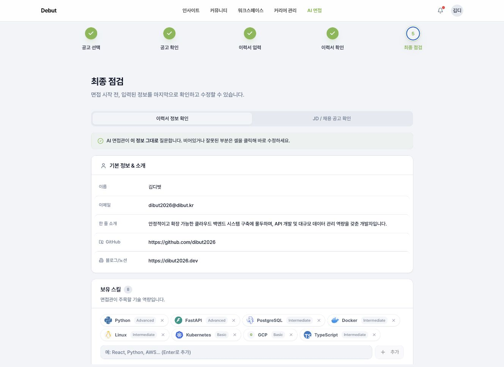
- 공고·직무·이력서 연결 상태를 최종 확인한다.
- 설정이 완료되면 면접 시작 기능을 통해 실전 단계로 이동한다.
인터뷰 분석 화면
진행한 모의면접 기록을 유형별로 모아 보고, 면접 성향과 세션별 결과를 확인한다.
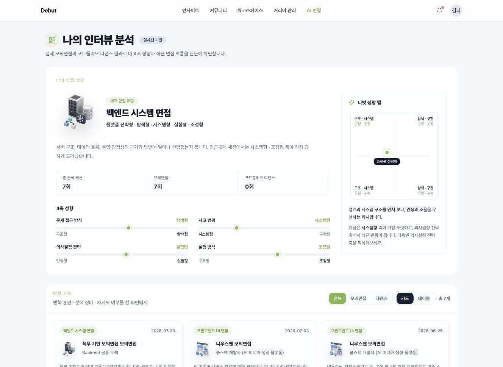
- 전체 분석 세션과 대표 면접 유형을 확인한다.
- 세션별 리포트와 반복 훈련 기록을 조회한다.
1. 사용자 플로우 확인 결과
- 대외활동 파악
- 워크스페이스 활동
- 경험 등록
- 커리어 문서 생성
- 모의면접 설정
- 면접 진행 준비
- 결과 확인
2. 금주 수행 내용
| 온보딩 | Debut 프로젝트의 서비스 목적, 기능 범위 및 주요 메뉴 구조를 파악하였다. |
| As-Is 분석 | 현재 구현된 기능을 기준으로 핵심 사용자 이동 경로를 확인하였다. |
| 플로우 점검 | 기술 블로그 탐색부터 면접 결과 확인까지 대표 화면 28개를 실제 브라우저에서 확인하였다. |
| 문서화 | 확인한 화면과 단계별 활동 내용을 A4 활동 보고서 형식으로 정리하였다. |
3. 로드맵 내 현재 위치
본 보고서는 7주 로드맵의 1주차 산출물이다. 확보한 화면 자료는 기능 분석과 백로그 도출을 거쳐 2주차 스프린트 플래닝의 기초 자료로 활용한다.
※ 기능 결과 분석 및 개선 백로그는 별도 활동으로 진행하며 본 문서에는 포함하지 않았다.
301. 기능 개선 개요
사용자가 기능의 목적을 더 빠르게 이해하고 자신의 정보에 맞는 콘텐츠를 탐색할 수 있도록 기술 블로그, 대외활동, 팀 모집 글쓰기 화면을 개선하였다.
1.1 개선 항목
| 대상 기능 | 기존 방식 | 개선 방식 |
|---|---|---|
| 기술 블로그 기업 영역 | 가로 스크롤에서 기업 로고를 직접 선택 | 반투명 기업 로고가 전광판처럼 이동하는 안내 배경으로 변경 |
| 기술 블로그 검색 | 기업 선택 영역과 검색 기능이 분리됨 | 검색창 오른쪽 기업 드롭다운에서 목록을 펼쳐 선택 |
| 대외활동 노출 | 최신순·마감임박순·인기순 정렬 선택 | 프로필 기술 스택과 활동 태그의 관련도를 계산해 맞춤 추천 |
| 팀 모집 글쓰기 | 모집 유형·진행 방식·참고 사항 입력 | 해당 UI를 제거하고 프로젝트·온라인 기본값을 서버에서 처리 |
1.2 변경된 인사이트 탐색 흐름
- 기술 블로그 탐색
- 기업·키워드 선택
- 프로필 맞춤 활동
- 프로젝트 팀 모집
기업 로고 영역은 서비스가 여러 테크 기업의 기술 블로그를 수집한다는 점을 전달하는 시각 요소로 사용하고, 실제 필터 조작은 명확한 드롭다운과 검색 기능으로 분리하였다.
기존 기업별 기술 블로그 선택
기존 화면에서는 사용자가 가로 스크롤 영역을 직접 이동하며 기업 로고를 선택하였다.
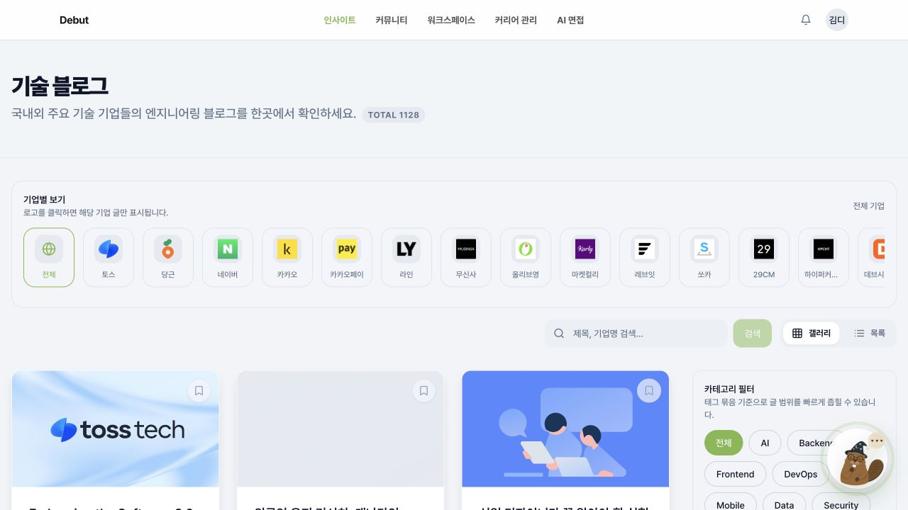
- 기업 로고 자체가 필터 버튼 역할을 하였다.
- 기업 수가 많아 원하는 기업을 찾으려면 가로 이동이 필요하였다.
- 기술 블로그 제공 기업을 보여주는 영역과 실제 선택 기능이 하나로 구성되어 있었다.
전광판형 기업 안내 및 드롭다운 선택
기업 로고는 반투명 상태로 자동 이동하는 배경형 안내 요소로 변경하고, 검색창 옆 드롭다운에서 기업을 선택하도록 개선하였다.
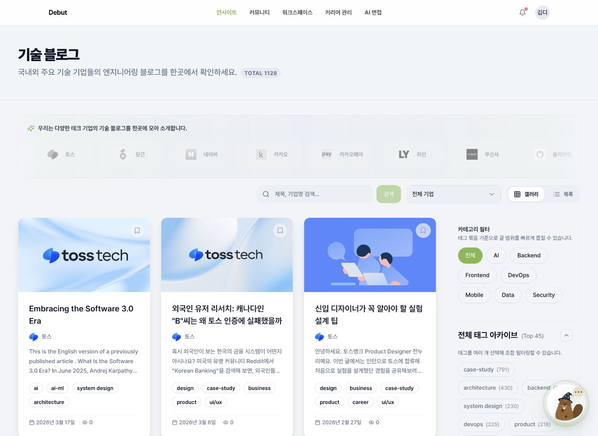
- 로고 전광판으로 다양한 테크 기업의 콘텐츠를 제공한다는 의미를 전달한다.
- 검색창 오른쪽의 ‘전체 기업’ 버튼을 누르면 기업 목록이 아래로 펼쳐진다.
- 기업을 선택하면 해당 기업의 기술 블로그 글만 조회된다.
기존 대외활동 목록 정렬
기존 화면은 최신순, 마감임박순, 인기순과 같은 공통 정렬 기준으로 사용자가 직접 목록 순서를 선택하였다.
- 모든 사용자에게 동일한 기준의 목록이 제공되었다.
- 사용자가 자신의 관심 분야와 일치하는 활동을 직접 찾아야 했다.
프로필 기반 대외활동 추천
사용자 프로필에 저장된 기술 스택과 활동의 태그·제목·설명을 비교하여 관련도가 높은 활동을 먼저 노출하도록 변경하였다.
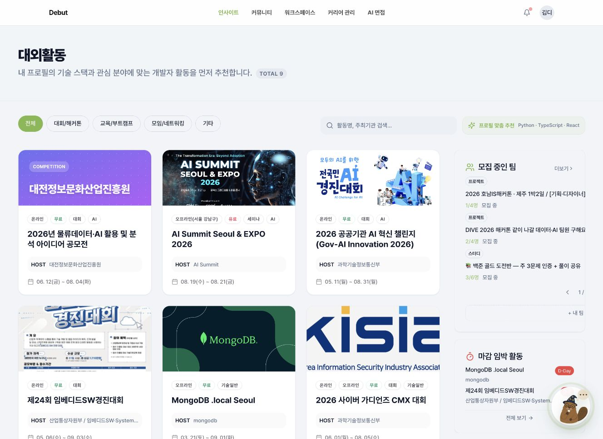
- 최신순·인기순 선택 대신 ‘프로필 맞춤 추천’ 상태를 표시한다.
- 추천 기준으로 활용한 대표 기술 스택을 함께 보여준다.
- 프로필과 일치하는 태그를 가진 활동이 목록 상단에 배치된다.
기존 모집 유형 선택
기존 글쓰기 화면에서는 사용자가 프로젝트, 스터디, 공모전, 모각코 중 팀 유형을 직접 선택하였다.
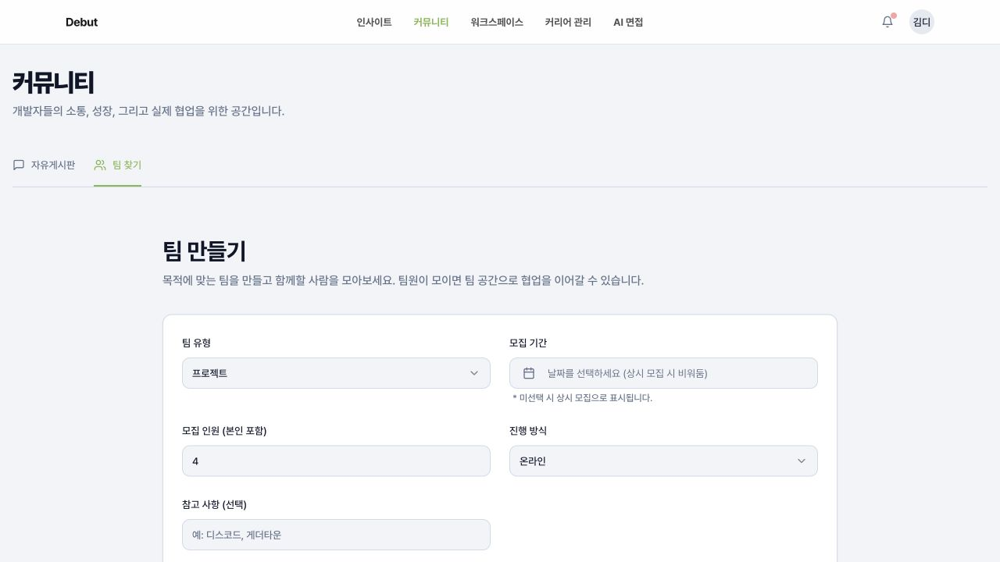
- 글 작성 시 팀 유형 선택 과정이 필요하였다.
- 프로젝트 모집이라는 서비스 목적과 다른 유형도 선택할 수 있었다.
불필요한 설정 UI 제거
프로젝트 팀 모집에 필요한 핵심 정보만 작성하도록 모집 유형, 진행 방식, 참고 사항 항목을 화면에서 제거하였다.
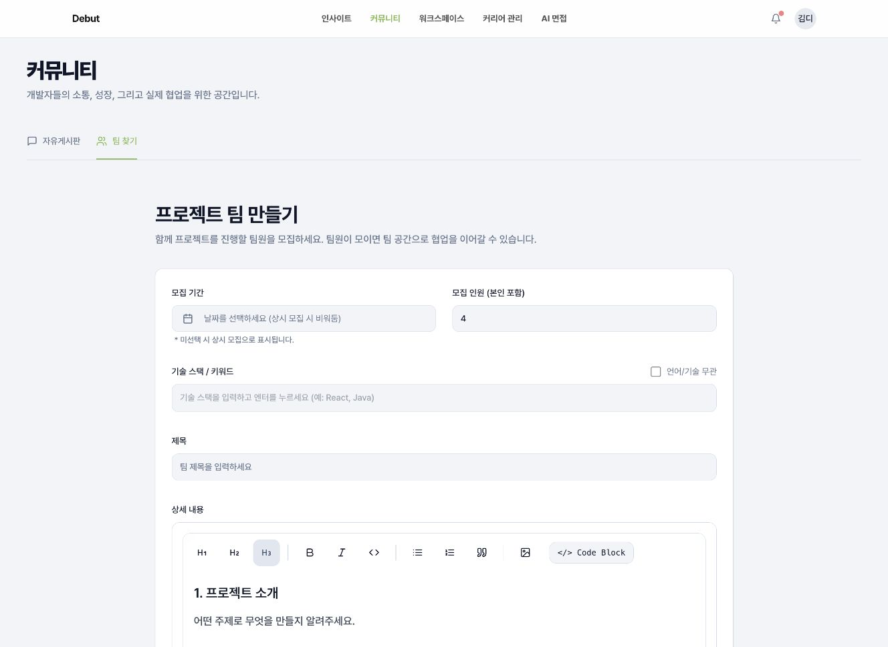
- 모집 유형·진행 방식·참고 사항 UI가 표시되지 않는다.
- 서버에서는 모집 유형을 프로젝트, 진행 방식을 온라인 기본값으로 저장한다.
- 작성 안내 문구도 프로젝트 소개 중심으로 변경하였다.
2. 변경 전·후 요약
| 기능 | 변경 전 | 개선 후 |
|---|---|---|
| 기술 블로그 | 가로 드래그 방식의 기업 로고 선택 | 전광판형 로고 안내 + 기업 드롭다운 선택 |
| 대외활동 | 최신·마감·인기 등 공통 정렬 | 프로필 기술 스택 기반 관련도 추천 |
| 팀 모집 | 유형·진행 방식·참고 사항 입력 | 설정 UI 제거 + 서버 기본값으로 저장 |
3. 1주차 활동 단계 반영
기존 사용자 흐름을 확인한 뒤 탐색 방식과 입력 단계를 단순화하였다. 변경 후 기술 블로그 기업 필터, 프로필 추천 결과, 모집 설정 UI 제거 상태를 실제 브라우저에서 확인하였다.
3.1 다음 주차 연계
- 기술 블로그 기업 선택 및 검색 흐름을 사용자 시연 항목으로 활용한다.
- 프로필 추천 기준과 활동 노출 결과를 2주차 스프린트 플래닝 자료로 활용한다.
- 화면에서는 모집 설정을 최소화하고 프로젝트·온라인 기본값을 팀 모집·워크스페이스 연결 기준으로 유지한다.
※ 기능 결과 분석 및 추가 백로그 도출은 별도 활동에서 진행한다.
38